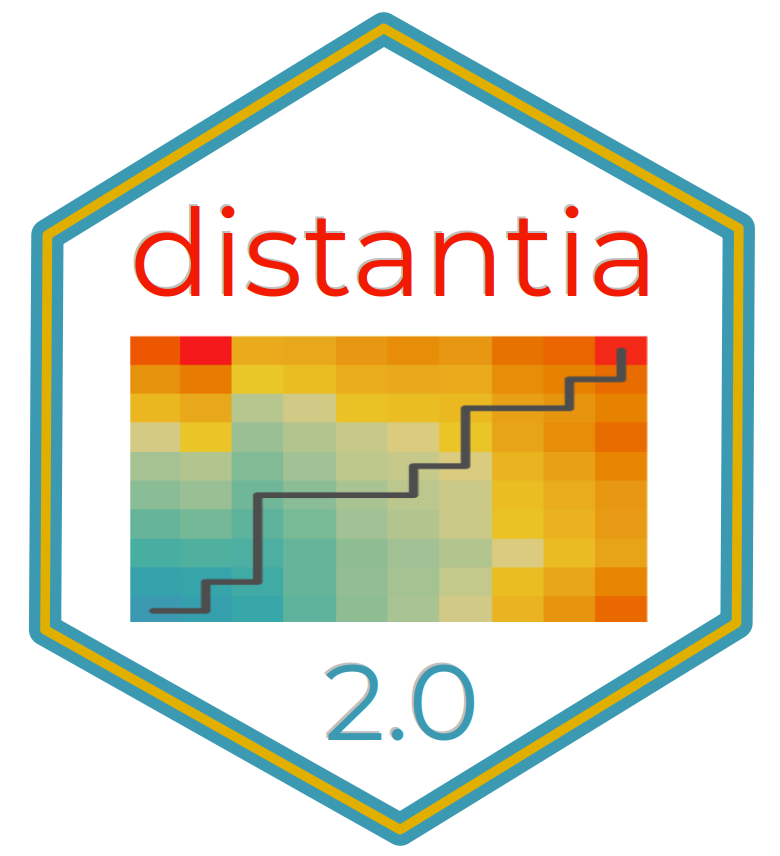

distantia In The Wild
Source:vignettes/articles/distantia_in_the_wild.Rmd
distantia_in_the_wild.RmdSummary
This article lists known applications of the R package
distantia found in the literature. # References
2026
Talluto, N., Bonalumi, I., Givonetti, A. et al. Combining taxonomic, functional and biomonitoring metrics to evaluate the recovery of alpine stream macroinvertebrate communities after an extreme flood. Aquatic Ecollogy, 60,* 67 (2026). https://doi.org/10.1007/s10452-026-10309-y
2025
Bloom, E. H., Atallah, S. S., & Casteel, C. L. (2025). Sustainable soil management practices are associated with increases in crop defense through soil microbiome changes. npj Sustainable Agriculture, 3, 67. https://doi.org/10.1038/s44264-025-00109-6
2024
Di Chiara, A., Hounslow, M. W., Maher, B. A., Karloukovski, V., Van Daele, M., Blaauw, M., & Verschuren, D. (2024). A lake record of geomagnetic secular variations for the last 23 ka from Lake Chala: Toward a composite directional lake record of the Earth’s magnetic field for equatorial East Africa. Geochemistry, Geophysics, Geosystems, 25, e2023GC011092. https://doi.org/10.1029/2023GC011092
2023
Bloom, E. H., Illán, J. G., Brousil, M. R., Reganold, J. P., Northfield, T. D., & Crowder, D. W. (2023). Long-term organic farming and floral diversity promotes stability of bee communities in agroecosystems. Functional Ecology, 37, 2809–2825. https://doi.org/10.1111/1365-2435.14428
Bourinet, F., Anneville, O., Drouineau, H., Goulon, C., Guillard, J., & Richard, A. (2023). Synchrony in whitefish stock dynamics: Disentangling the effects of local drivers and climate. Journal of Limnology, 82(1). https://doi.org/10.4081/jlimnol.2023.2134
2022
Bilska-Kos, A., Pietrusińska, A., Suski, S., Niedziela, A., Linkiewicz, A. M., Majtkowski, W., Żurek, G., & Zebrowski, J. (2022). Cell wall properties determine genotype-specific response to cold in Miscanthus × giganteus plants. Cells, 11(3), 547. https://doi.org/10.3390/cells11030547
Deza-Araujo, M., Morales-Molino, C., Conedera, M., Vannière, B., Pezzatti, G. B., Pizarro Pinochet, V., & Tinner, W. (2022). Influence of taxonomic resolution on the value of anthropogenic pollen indicators. Vegetation History and Archaeobotany, 31, 67–84. https://doi.org/10.1007/s00334-021-00838-x
Korolkova, O. A., & Lobodinskaya, E. A. (2022). Database of video images of natural emotional facial expressions: Perception of emotions and automated analysis of facial structure. Journal of Optical Technology, 89, 498–501. https://opg.optica.org/jot/abstract.cfm?uri=jot-89-8-498
Wakefield, M. I., Hounslow, M. W., Edgeworth, M., Marshall, J. E., Mortimore, R. N., Newell, A. J., Riding, J. B., Simmons, M. D., Storey, A., & Woods, M. A. (2022). Examples of correlating, integrating, and applying stratigraphy and stratigraphical methods. In Deciphering Earth’s History: The Practice of Stratigraphy. The Geological Society Press. https://doi.org/10.1144/GIP1-2022-22
2021
Menezes, T., Carmo, R., Wirth, R., Leal, I. R., Tabarelli, M., Laurênio, A., & Melo, F. P. L. (2021). Introduced goats reduce diversity and biomass of herbs in Caatinga dry forest. Land Degradation & Development, 32, 79–90. https://doi.org/10.1002/ldr.3693
Parker, S. (2021). Monitoring landscape and spectral dynamics of subtropical freshwater wetlands that have undergone hydrological restoration [Master’s thesis, University of Central Florida]. Electronic Theses and Dissertations, 2020–2023 (No. 542). https://stars.library.ucf.edu/etd2020/542
Schläfli, P., Gobet, E., van Leeuwen, J. F. N., Vescovi, E., Schwenk, M. A., Bandou, D., Douillet, G. A., Schlunegger, F., & Tinner, W. (2021). Palynological investigations reveal Eemian interglacial vegetation dynamics at Spiezberg, Bernese Alps, Switzerland. Quaternary Science Reviews, 263, 106975. https://doi.org/10.1016/j.quascirev.2021.106975
Zander, P. D., Żarczyński, M., Tylmann, W., Rainford, S., & Grosjean, M. (2021). Seasonal climate signals preserved in biochemical varves: Insights from novel high-resolution sediment scanning techniques. Climate of the Past, 17(5), 2055–2071. https://doi.org/10.5194/cp-17-2055-2021
2020
Cui, Q.-Y., Gaillard, M.-J., Vannière, B., Colombaroli, D., Lemdahl, G., Olsson, F., Benito, B., & Zhao, Y. (2020). Evaluating fossil charcoal representation in small peat bogs: Detailed Holocene fire records from southern Sweden. The Holocene, 30(11), 1540–1551. https://doi.org/10.1177/0959683620941069